PLASTIC. PEOPLE. PLANET.
SEE THE CRISIS. IMAGINE THE CHANGE.
Every sachet, bottle, and carrier bag tells a story of systemic design and ecological consequence. Choose an interactive lens to explore the problem or build the solution.
SEE THE CRISIS. IMAGINE THE CHANGE.
Every sachet, bottle, and carrier bag tells a story of systemic design and ecological consequence. Choose an interactive lens to explore the problem or build the solution.

Exploring the Global Plastic & Microplastic Crisis through the Philippines. Plastic is deeply intertwined with daily Filipino life—from sachet culture to takeout delivery. But where does it go after disposal?
Everyday Consumer Plastics →Environmental Dispersal
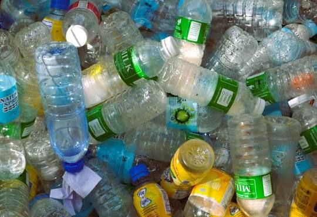
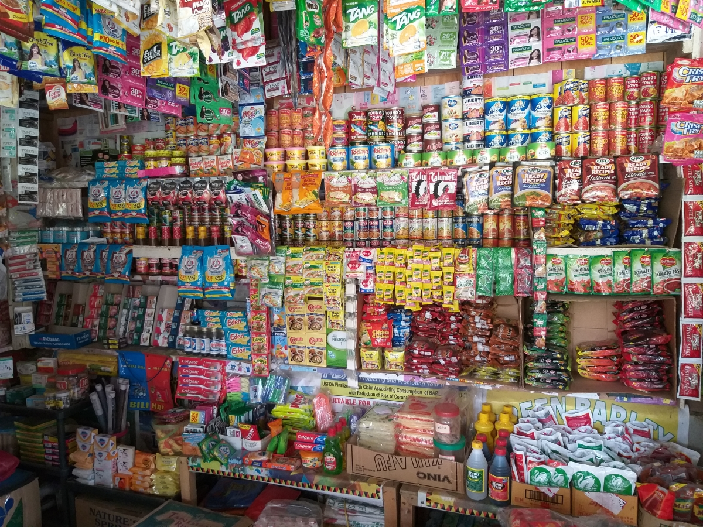


Click, calculate, zoom, and navigate through interactive modules designed to reveal how everyday plastic decisions impact Philippine ecosystems.
Enter your common daily household sachet consumption across various categories.
"One sachet seems small. Multiply that by millions of people, and the scale becomes much bigger."
Note: This is an estimate of household usage, not a direct measurement of environmental leakage.
Click documented Philippine environmental hotspots to inspect research findings and photographs.
Issue: Dense Coastal Marine Litter & Accumulation
Receives macro and microplastic waste conveyed by multiple tributary river networks across Luzon. Heavy tidal deposition deposits single-use sachets, bags, and PET bottles along urban shorelines.
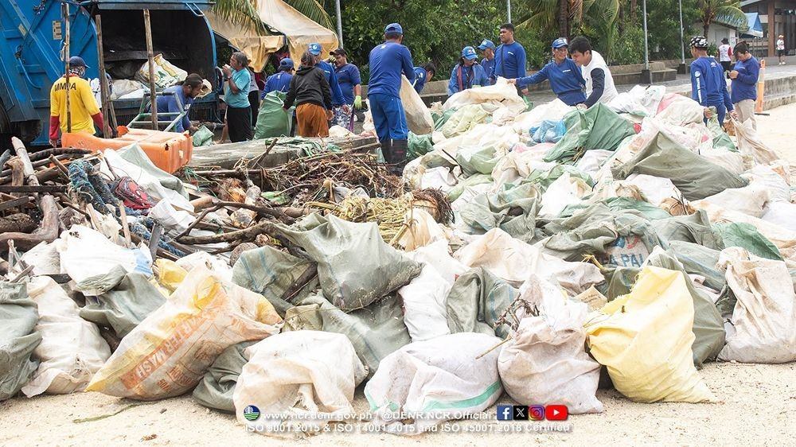
Significant seasonal washup of single-use consumer plastics following monsoon storms.
Click each stage to trace a single plastic bag's movement from a Filipino street to the marine web.
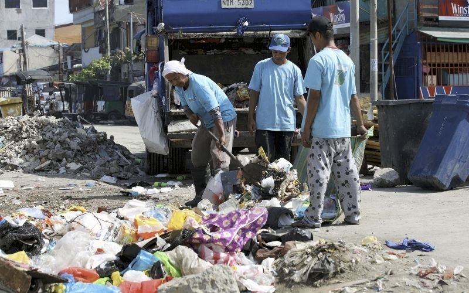
A thin plastic bag discarded after market shopping sits on an urban curb. Without prompt waste collection, light wind easily shifts it toward road channels.
Click any packaging component in a standard takeout meal order to inspect its purpose and post-disposal journey.
Why it's used: Provides thermal insulation and prevents spillages during transit.
After Disposal: Commonly made of rigid expanded polystyrene or polypropylene. Low recycling demand means most go directly to landfills or incinerators.
Click timeframes to discover everyday single-use plastic touchpoints across an ordinary day.
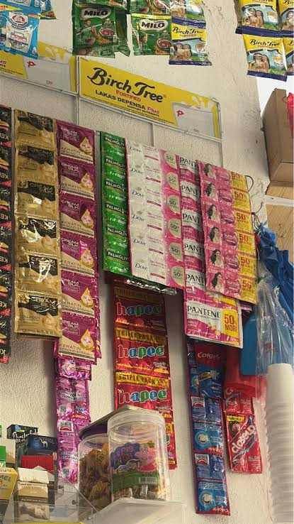
Mornings routinely begin with multi-layer foil sachets for shampoo, toothpaste, and 3-in-1 coffee. These single-serving items are opened and thrown away within minutes.
Click each organism in the marine trophic sequence to examine microplastic transfer dynamics.
Tiny plastic fragments smaller than 5 millimeters float suspended in surface currents or settle into benthic seabed sediment.
Use the scale slider below to zoom from macro plastic objects down to sub-5mm microparticles.
Large, easily visible bottle structure. At this stage, waste is readily noticeable along riverbanks and shorelines.
Reference Scale: ~200 mmClick each statistic card to uncover verified research numbers, sources, and Philippine context.
Generated annually nationwide, with around 20% estimated to leak into marine waters.
Source: World Bank Group Country StudyIndividual sachets consumed daily across neighborhood sari-sari stores.
Source: GAIA Alliance ReportEstimated annual riverine plastic discharge flowing through Metro Manila into Manila Bay.
Source: DENR-EMB Technical StudyUnlike organic waste which biodegrades naturally into organic matter, synthetic polymers photodegrade. Sunlight ultraviolet radiation and mechanical wave action fragment larger objects into smaller particles.
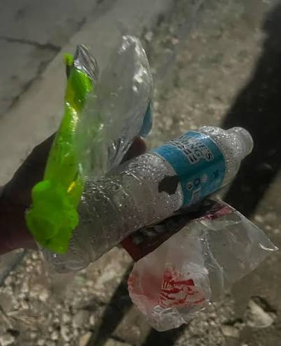
Intact bottle dumped near water channel before breakdown begins.
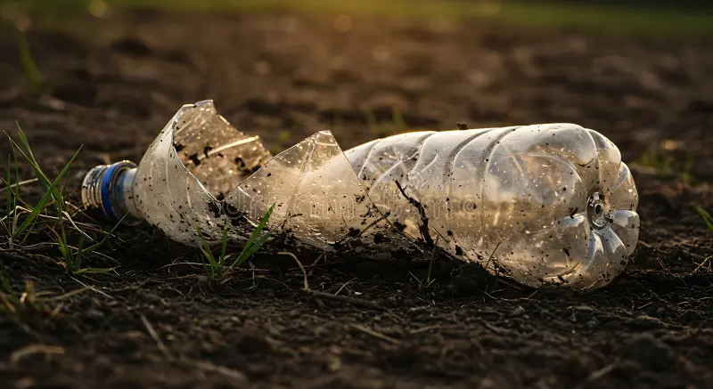
Plastics break into sharp fragments through brittle photo-oxidation.
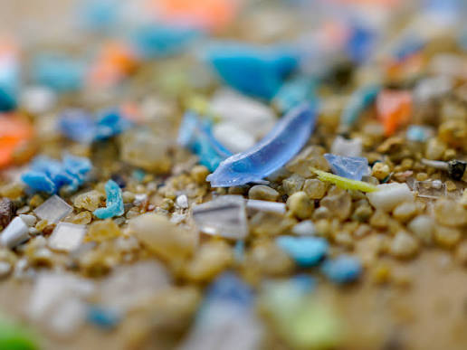
Tiny resin pellets, secondary fibers, and degraded fragments disperse into aquatic columns.
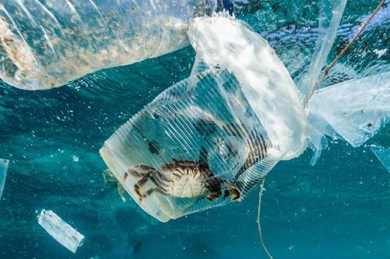
Plankton, small fish, and filter feeders ingest floating micro-particles mistaking them for food.
The Philippines faces severe waste management challenges due to archipelagic topography, high population density, and widespread dependence on single-use sachet packaging.
Metric Tons of Plastic Waste Annually
Generated in the Philippines every single year, with an estimated 20% leaking directly into coastal waters.
Source: World Bank Group Country StudySingle-Use Sachets Used Daily
Filipinos consume around 163 million individual sachet packets daily due to low-income consumer patterns.
Source: GAIA Alliance ReportMetric Tons Leaked from Pasig River
The Pasig River system ranks among the world's highest riverine contributors of marine plastic debris into the ocean.
Source: DENR-EMB Technical Report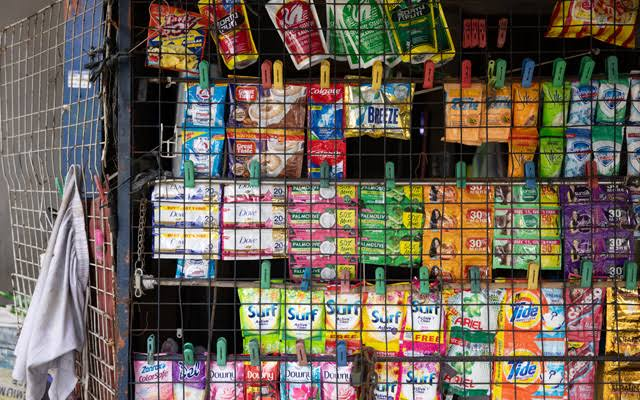
Consumer use of single-use goods
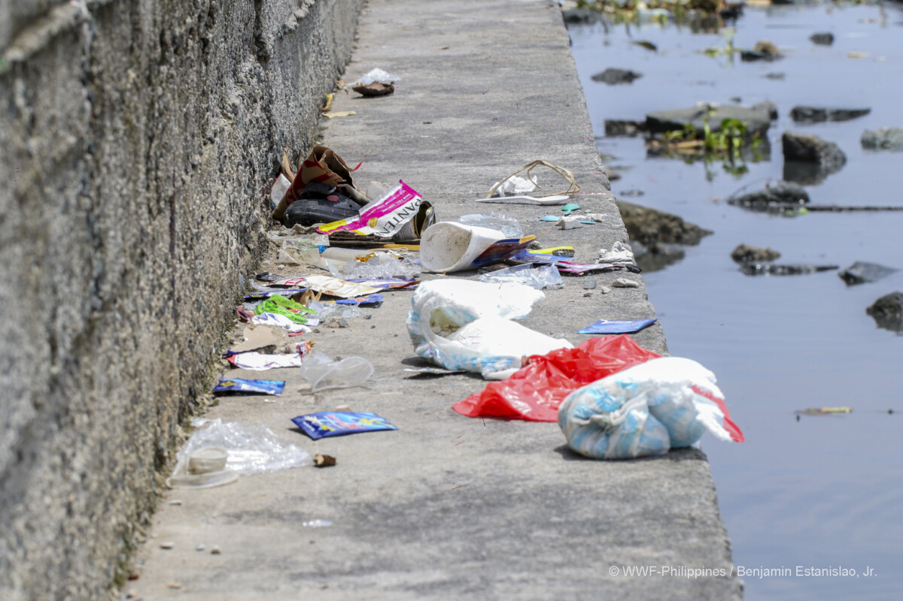
Uncollected trash on urban roads
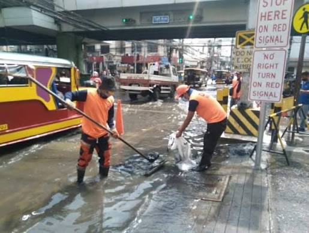
Monsoon rains wash debris into drains
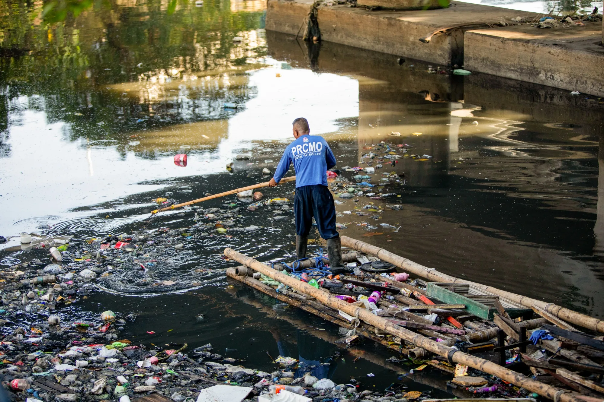
Rivers transport waste downstream
Trash accumulates on beaches
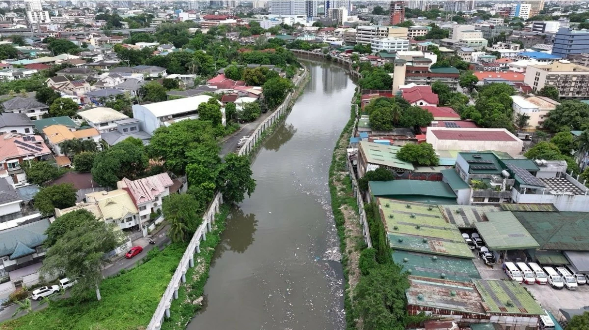
Fragments break down in ocean currents
Plastic pollution is not merely an individual consumer issue. It is driven by socioeconomic retail packaging models, rapid food delivery systems, e-commerce, and infrastructure gaps.
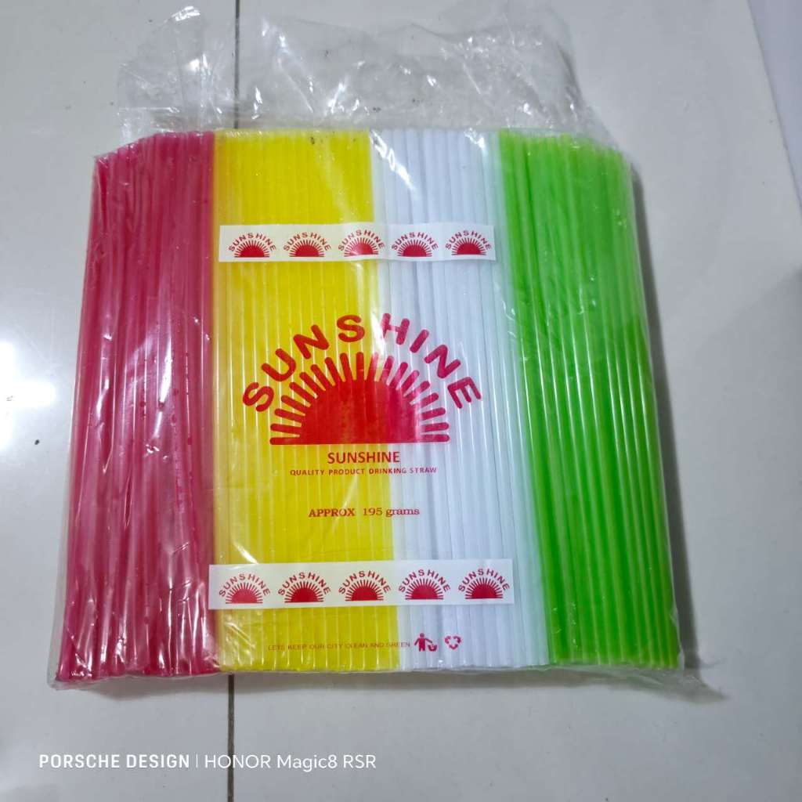
Used briefly during cold drinks, plastic straws rarely get recycled due to light weight and small size, easily washing through drainage channels.
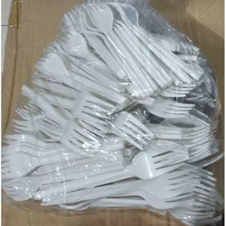
Single-use polystyrene and polypropylene cutlery bundled with fast food meals provide brief convenience but last centuries in landfills.
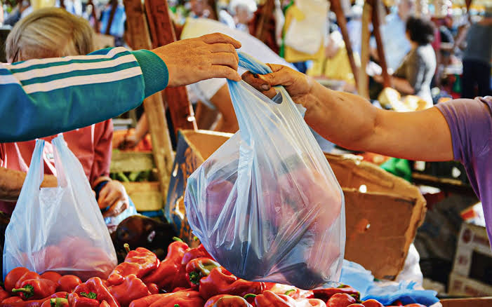
Thin film plastic bags ("sando bags") clog drainage grids during heavy typhoons, directly aggravating urban flash floods.
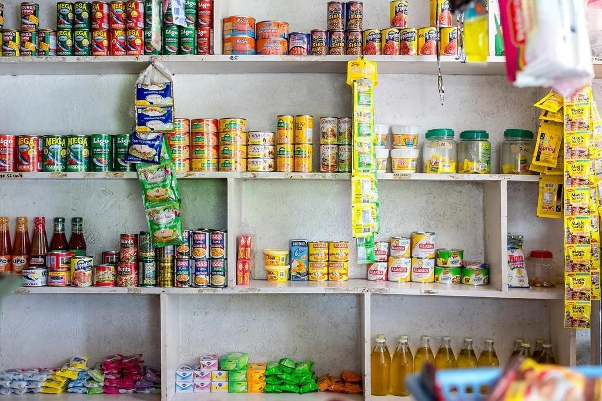
Multinationals package shampoo, coffee, seasoning, and laundry detergent in small, non-recyclable multi-layer aluminum-plastic sachets targeted at daily-wage earners.
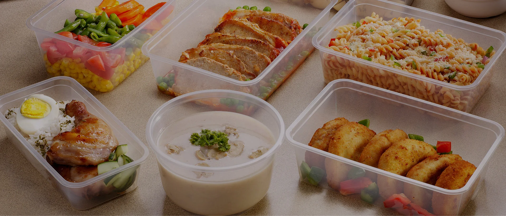
A single meal order often includes a plastic clam-shell container, outer carrier bag, beverage cup, lid, straw, and condiment sachets.
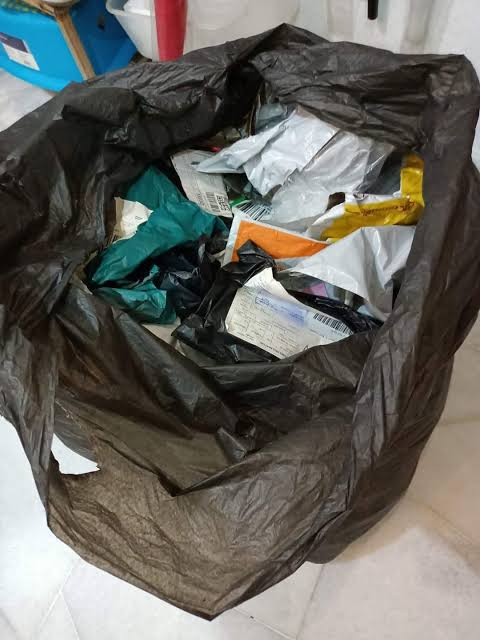
Online shopping platforms deliver thousands of items daily wrapped in multiple protective layers: courier plastic pouches, multi-layer bubble wrap, plastic stretch films, and synthetic adhesive tapes.
Once entering the natural environment, plastic affects ecosystems across all layers of the biosphere—from inland rivers and coastal mangroves to delicate coral reefs and marine life.
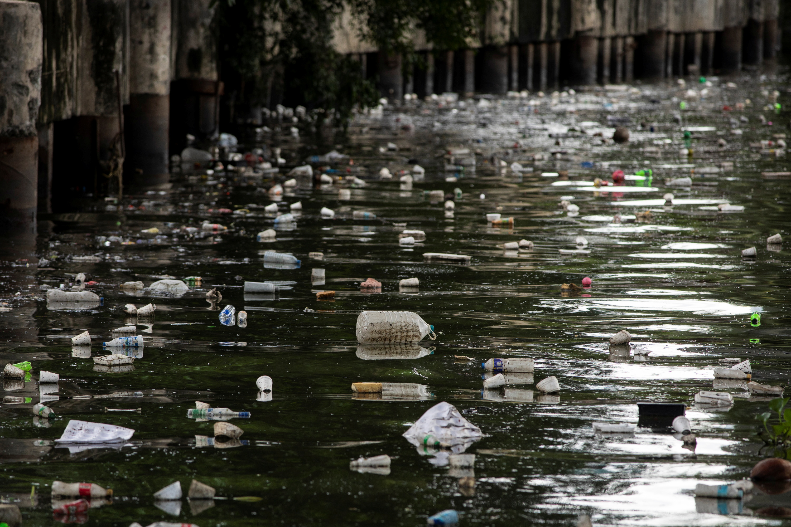
Floating waste accumulates in stagnant river choke points, blocking natural flow, smothering benthic habitats, and reducing dissolved oxygen levels essential for freshwater species.
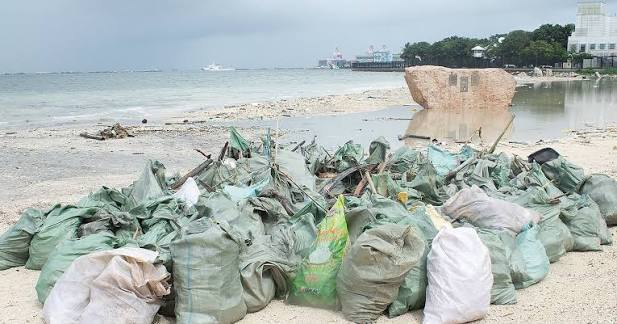
Even remote island beaches receive tide-borne microplastics and macro waste, threatening coastal ecotourism, nesting sites, and shoreline ecological stability.
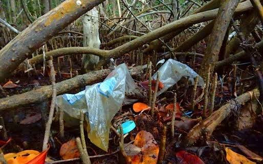
Dense prop roots of Philippine mangroves trap floating plastic bags and sheets, suffocating pneumatophores (breathing roots) and damaging vital fish nursery habitats.
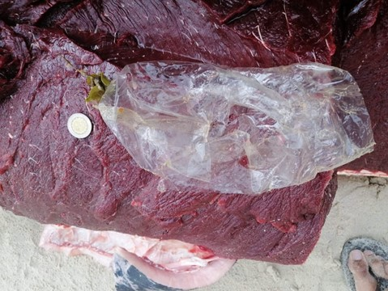
Sea turtles confuse floating translucent plastic bags with jellyfish. Ingested plastics block digestive tracts, leading to starvation, while ghost nets entangle fish and cetaceans.
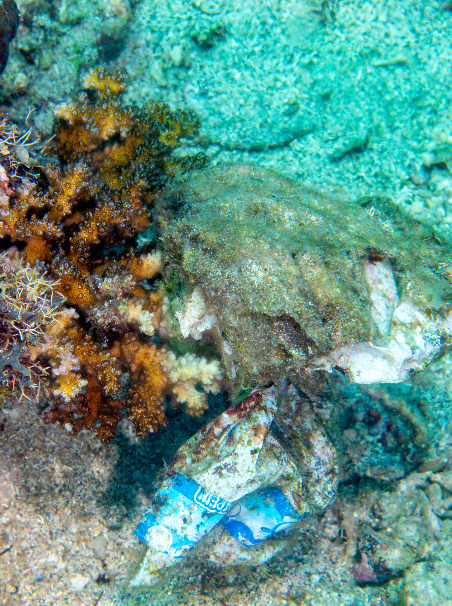
Plastics snagged on coral heads cause physical tissue abrasion, block sunlight needed for zooxanthellae photosynthesis, and increase likelihood of coral disease outbreaks.
Tracing the routine plastic touchpoints of an ordinary day reveals how single-use packaging accumulates unconsciously.
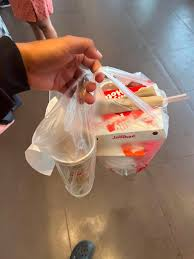
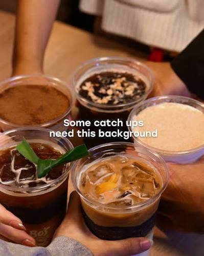
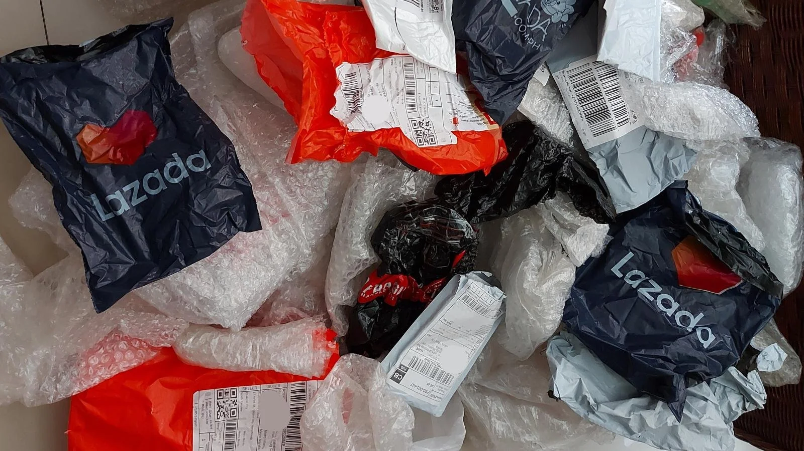
"Plastic may become smaller, but the problem does not simply disappear."
Understanding its pathway through ecosystems is the first step toward recognizing our shared connection to Earth's environmental systems.

The crisis across our rivers, shorelines, and cities is profound—but our capacity to redesign the system is greater. Explore how everyday swaps, circular engineering, localized interventions, and collective responsibility rewrite the story of plastics in the Philippines.
Legally required packaging footprint recovery target for major FMCG corporations by 2028 (RA 11898).
Zero-waste sari-sari store refilling pilots providing accessible, sachet-free essentials to local neighborhoods.
Model communities like Apo Island and Siquijor redirecting ocean-bound waste into decentralized recovery.

With plastic pollution intercepted upstream, coastal nurseries recover, sea turtles feed safely, and ecotourism sustains local coastal fisherfolk.
Single-use plastic isn't inevitable; it's a packaging design choice. Explore practical, accessible alternatives to everyday items and watch how one personal swap ripples across the entire community and marine environment.
Used once in 3 minutes, laminated aluminum-plastic layers cannot be mechanically recycled in municipal recovery systems and persist for centuries in storm channels.
Bring your own reusable bottle to neighborhood refilling stations, or choose concentrated solid bars with paper wrapping.
Tap the rings below to explore each layer of systemic consequence.
Directly diverts 700+ single-use packaging items per year from curbside pickup.
Store owners capture higher profit margins through bulk drums with zero packaging waste.
Storm drainage culverts stay unblocked during typhoons, reducing urban flash flood risks.
Zero microplastic degradation in rivers; juvenile fish and marine turtles feed without ingestion hazards.
The linear "take-make-waste" economy leaks millions of tons into Philippine waters. Connect all 6 stages of a circular system to keep materials valuable and prevent waste at the source.
When product design, retail refill, community collection, and producer responsibility operate as a complete circle, environmental leakage drops to near zero.
Eliminating non-recyclable multi-material sachets before they are produced. Developing monomaterial recyclable pouches, dry concentrate tablets, and indigenous home-compostable biopolymers derived from Philippine seaweeds.

In the Crisis view, we observed how uncollected plastic travels unchecked from households into drainage channels, river basins, and open seas. Now explore how decisive interventions break the conveyor belt at every stage.
FMCG manufacturers flood sari-sari supply chains with micro-portion multi-layer sachets. Because layers cannot be separated, they are discarded into open dumps or road culverts.
Producers standardize packaging to recyclable monomaterials, offer concentrated tablets, or deploy localized bulk dispensers, eliminating sachet waste before it leaves the factory.
From urban barangays in Metro Manila to isolated marine reserves in the Visayas, Filipino innovators, cooperatives, and local governments are pioneering scalable circular models.
 Policy & Law
Policy & Law
Mandates large brand owners and enterprises to take financial and operational responsibility for the plastic packaging they produce, legally targeting an 80% recovery footprint by 2028.
Refill & Business
Pioneered in Western Visayas and Negros, "Wala Usik" (Zero Waste) retrofits neighborhood sari-sari stores with bulk liquid taps. Residents bring their own jars for small, affordable portions without sachets.
 Upcycling & Tech
Upcycling & Tech
Philippine social enterprises shred flexible sachet wrappers and mix them with sand, fly ash, and cement to produce heavy-duty sidewalk pavers and hollow blocks for civic schools.
 Policy & Equity
Policy & Equity
Informal waste pickers collect over 60% of recyclable plastic in the Philippines. Co-operatives integrate collectors into municipal logistics with dignified living wages, safety gear, and healthcare.
 Zero-Waste Islands
Zero-Waste Islands
Island communities enforce strict single-use plastic prohibitions, decentralized barangay MRFs, and household segregation audits, achieving >70% reduction in ocean-bound municipal waste.
 Upcycling & Tech
Upcycling & Tech
Homegrown Philippine labs formulate flexible packaging films from farmed Eucheuma red seaweeds and cassava starch. The material dissolves in hot water and biodegrades safely in marine water within 90 days.
Plastic pollution is not merely a consumer failure. True ecological recovery requires synchronized action across citizens, corporate producers, local communities, and government regulators.
Choose reusable tumblers and bayong bags; segregate waste into clean dry recyclables; decline single-use cutlery on delivery apps.
Register under the EPR Law; redesign packaging into monomaterials; fund deposit-return container loops; stock bulk refill options.
Operate barangay Materials Recovery Facilities (MRFs); reward segregation through trash-to-cash; integrate informal waste pickers.
Strictly enforce RA 9003 and the EPR Act; fund municipal river interceptors; provide tax incentives for zero-waste packaging startups.
Carry a personal reusable water flask, reusable spoon/fork, and foldable market bag wherever you go.
Segregate dry recyclables from wet kitchen scraps; explore a nearby zero-waste refill shop for detergents.
Support barangay cleanup drives, petition favorite food chains to offer plastic-free dine-in, and support waste worker dignity.
Small changes multiply when adopted consistently. Toggle alternative habits to calculate how much single-use plastic waste your household or community can divert annually from Philippine oceans.
Replaces 1 single-use PET bottle per day
Replaces 4 daily shampoo, coffee & soap sachets
Replaces 2 grocery & palengke sando bags per day
Replaces takeout clamshells and plastic spoons
Pick a commitment or write your own to generate your Philippine Ocean Guardian badge.
"I will bring my reusable bottle and bayong to the market this week."
By starting with this single habit, I am helping turn off the plastic tap at its source and keeping Philippine shorelines and marine life thriving.
Compare three possible ecological trajectories for the Philippine archipelago. The crisis is urgent, but the path we choose right now determines the fate of our marine heritage.
Linear production expands unchecked. Tingi sachets and delivery packaging double by 2040 without producer accountability or municipal infrastructure.
Millions spent on continuous beach sweeps while packaging manufacturing increases. Mop the floor while the tap is still running at full pressure.
Prevention and recovery work in unison: producers held to 80% EPR recovery, refill sari-sari networks ubiquitous, dignified waste workers, and pristine reef corridors.
By tackling plastic pollution as an entire system—from corporate product design and sari-sari refill taps to barangay waste sorting and river interceptors—the Philippines can safeguard its marine biodiversity for generations to come.